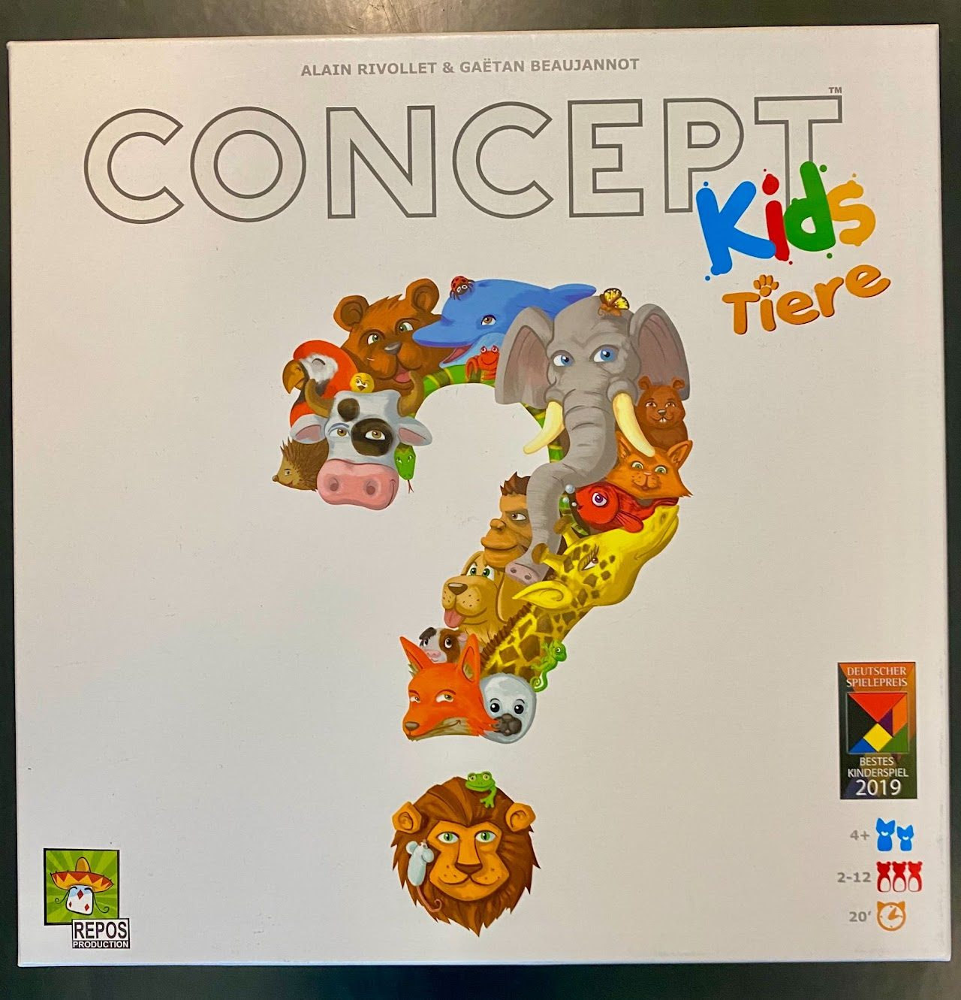
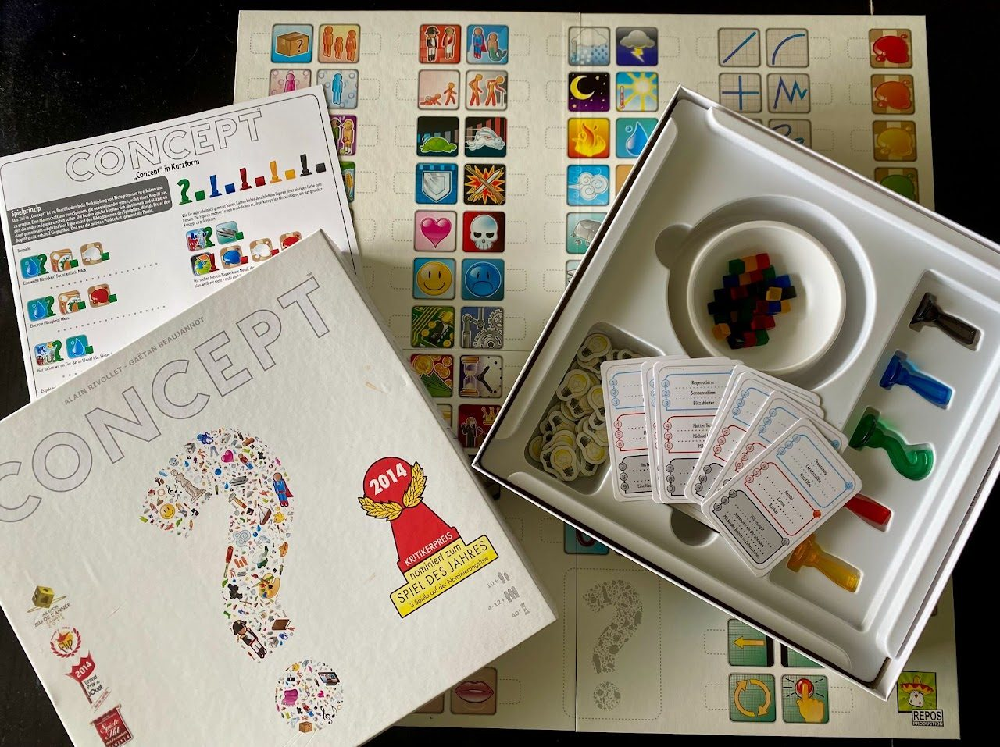

Zwei verschidene Varianten des Spiels:
Concept Kids (für Kinder ab 4 Jahren)
Concept (ab 10 Jahren)
Concept Kids: Tiere

- Art des Spiels
- Brettspiel
- Plattformen
- nicht digital
- Genre
- Familien-/Kinderspiel, Kommunikationsspiel
- Empfohlenes Alter
- Ab 4 Jahren
- Spieleranzahl
- 2 bis 12 Spieler, lässt sich aber auch mit der ganzen Klasse spielen
- Spieldauer
- Ca. 20 Minuten, beliebig anpassbar
- Schwierigkeitsgrad
- Einfach
Kurzbeschreibung
Concept Kids: Tiere ist eine kinderfreundliche Adaption des beliebten Kommunikationsspiels Concept, speziell ausgerichtet auf Kinder im Vorschul- und Primarschulalter. In diesem kooperativen Spiel versuchen die Spielerinnen und Spieler, Tiere zu erraten, die durch die Auswahl von Icons auf dem Spielbrett beschrieben werden. Das Spiel fördert das logische Denken, die Teamarbeit und die Sprachentwicklung, indem es die Spieler auffordert, Tiere basierend auf ihren Merkmalen, Lebensräumen und anderen Eigenschaften zu identifizieren.
Besondere Merkmale
Kooperatives Spiel: Alle Spieler arbeiten zusammen, was den Teamgeist und die kommunikativen Fähigkeiten fördert.
Bildungsaspekt: Hervorragend geeignet, um Kindern Tiere und ihre unterschiedlichen Eigenschaften näherzubringen und das informatische Denken, insbesondere das Segmentieren in einzelne Eigenschaften zu üben.
Anpassungsfähig: Die Spielregeln können für jüngere oder weniger erfahrene Spieler angepasst werden.
Besondere Anforderungen
Keine zusätzliche Hardware oder Software erforderlich.
Lernpotenzial
Concept Kids: Tiere bietet eine spielerische Lernerfahrung, die Kindern hilft, ihre Sprachkenntnisse zu erweitern und ihr Verständnis für die Tierwelt zu vertiefen. Es fördert kritisches Denken und Schlussfolgerungen, da Spieler Merkmale und Eigenschaften der Tiere analysieren müssen, um sie zu erraten.
Unterrichtsrelevanz
Das Spiel kann im Unterricht verwendet werden, um Themen wie Biologie, Naturkunde und Sprach- Denkentwicklung zu unterstützen. Es bietet eine interaktive Alternative zu traditionellen Lernmethoden, die das Engagement der Schüler erhöht und gleichzeitig Spass am Lernen fördert. Durch die Kooperation und Diskussion im Spiel werden soziale und kommunikative Fähigkeiten gestärkt.
Links und Quellen
Spiel des Jahres: Concept Kids
Video-Tutorial: Concept Kids
Fazit
Concept Kids: Tiere ist ein ausgezeichnetes Spiel für den Einsatz im Unterricht, um Kindern auf spielerische Weise die Tierwelt näher zu bringen. Es fördert nicht nur die kognitive Entwicklung und Sprachfähigkeiten, sondern stärkt auch soziale Kompetenzen durch sein kooperatives Spielprinzip.
Concept

- Art des Spiels
- Analog, Brettspiel
- Plattformen
- Nicht digital
- Genre
- Partyspiel, Kommunikationsspiel
- Empfohlenes Alter
- Ab 10 Jahren
- Spieleranzahl
- 4 bis beliebig viele Spielerinnen und Spieler
- Spieldauer
- Ca. 30 Minuten pro Runde
- Schwierigkeitsgrad
- Einfach bis mittel
Kurzbeschreibung
Concept ist ein kommunikatives Partyspiel, bei dem Spielerinnen und Spieler Begriffe oder Ausdrücke vermitteln müssen, indem sie Symbole auf einem Spielbrett verwenden. Statt Worte zu verwenden, nutzen die Spieler Bilder und Symbole, um ihre Mitspieler dazu zu bringen, das gegebene Konzept zu erraten.
Besondere Merkmale
Kommunikatives Spiel ohne Sprache
Fördert kreative Denkweise und Assoziationsfähigkeiten und somit informatisches Denken
Vielseitig einsetzbar für verschiedene Altersgruppen und Gruppengrössen
Besondere Anforderungen
Das Spielbrett, Spielkarten und Spielsteine sind erforderlich. Keine zusätzliche Hardware oder Software notwendig.
Lernpotenzial
Concept bietet eine ausgezeichnete Möglichkeit, die Kommunikationsfähigkeiten der Spielerinnen und Spieler zu verbessern. Durch das Spiel ohne Worte werden alternative Kommunikationsmethoden angeregt, was besonders für den Sprachunterricht oder den Einsatz in interdisziplinären Unterrichtsfächern geeignet ist. Es fördert ausserdem das konzeptuelle Denken und die kreative Herangehensweise an Problemlösungen und unterstützt so das informatische Denken.
Unterrichtsrelevanz
Concept eignet sich hervorragend für den Einsatz im Unterricht, um Kommunikationsfähigkeiten zu fördern und kreatives Denken anzuregen. Es bietet eine interaktive und unterhaltsame Möglichkeit, komplexe Konzepte zu vermitteln und das Verständnis der Schülerinnen und Schüler zu vertiefen.
Links und Quellen
Spiel-des-Jahres-Website: Concept
Video-Tutorial: Concept
Fazit
Concept ist ein vielseitiges und unterhaltsames Spiel, das sowohl für den Einsatz im Unterricht als auch für soziale Zusammenkünfte geeignet ist. Es fördert das konzeptuelle Denken und die Fähigkeit, Ideen kreativ zu vermitteln, während es gleichzeitig eine unterhaltsame und interaktive Erfahrung bietet.